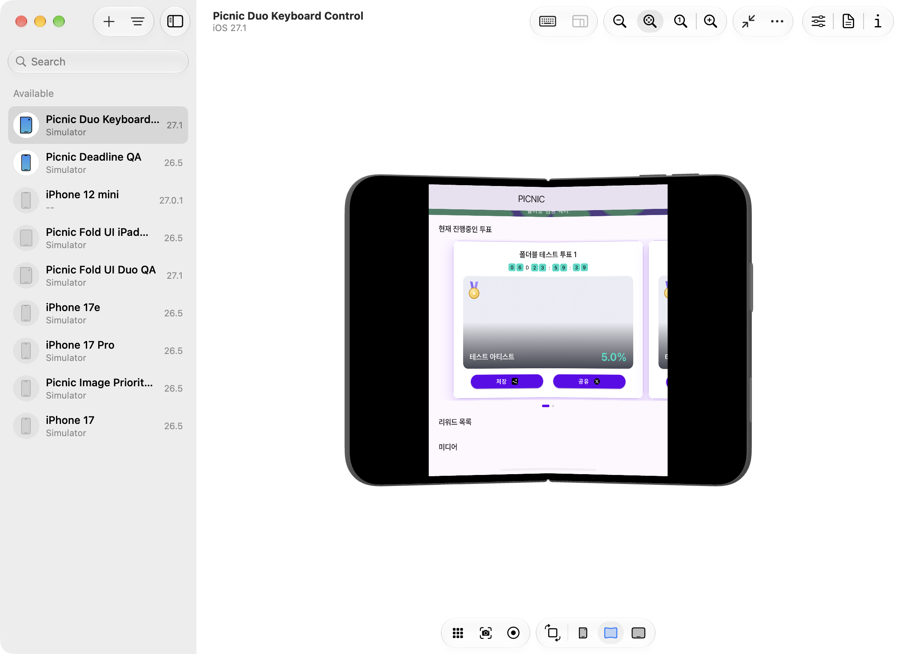
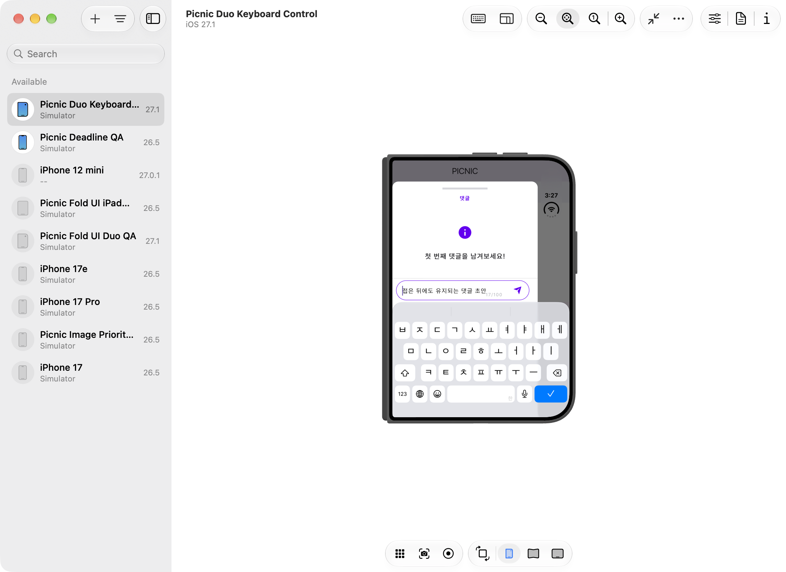
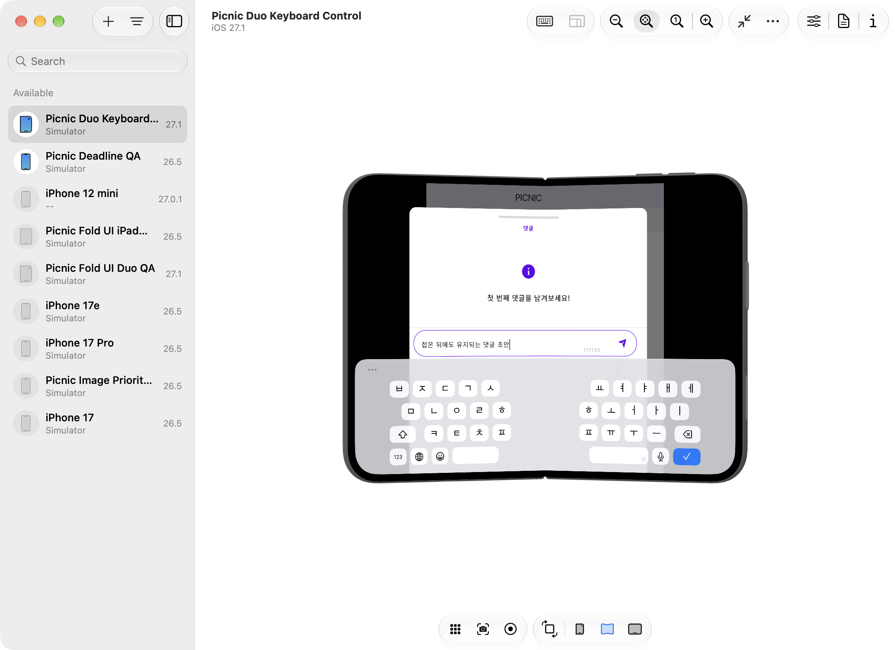
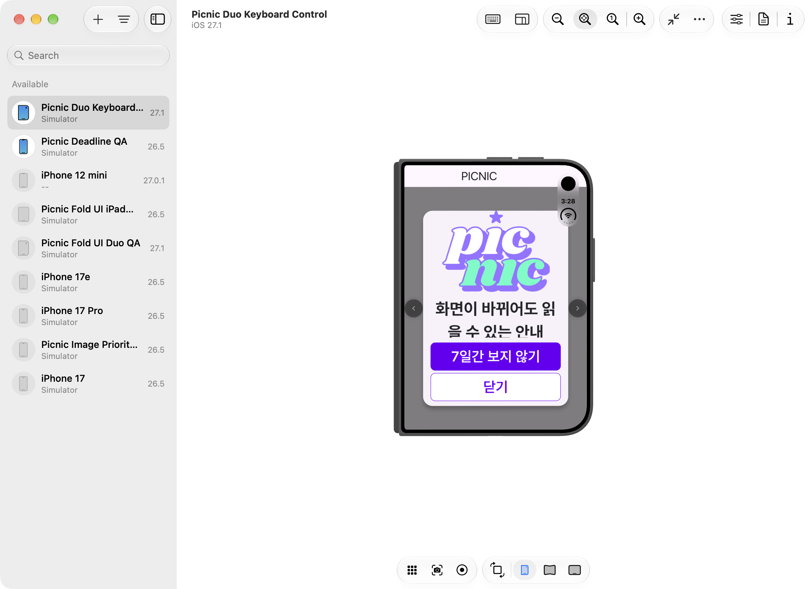
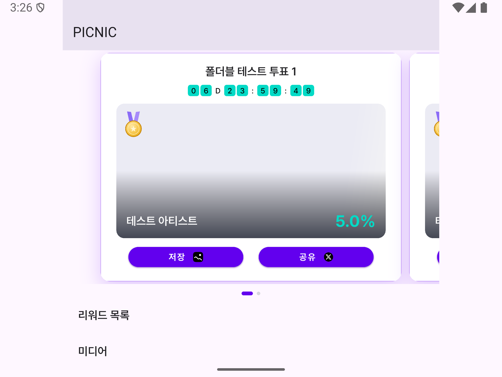
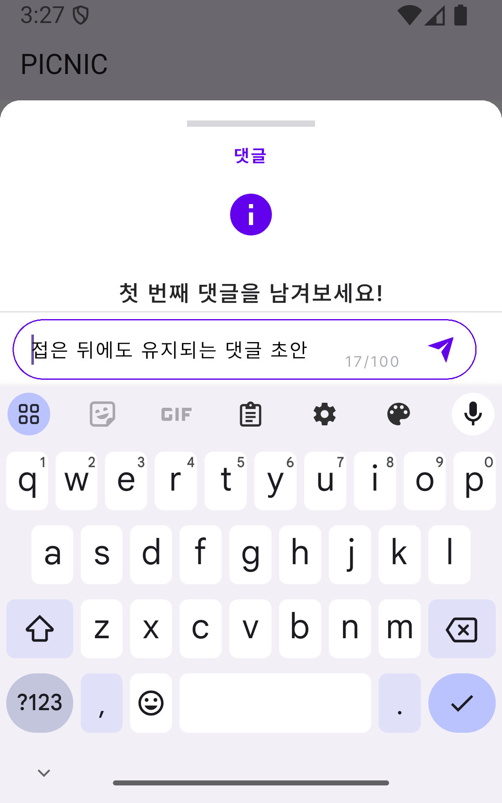
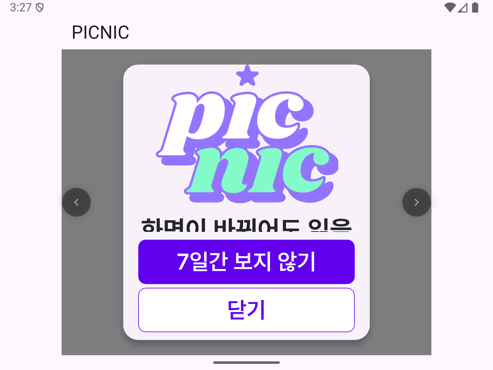

2026-10-29 · 기준 34abe5fd4 · docs/foldable-ui-audit
사용자는 기존 한 열 안정화와 화면별 검증을 선택했다. 두 열 재설계 대신 기존 최대 콘텐츠 폭 600과 시스템 글자 배율 상한 2.6을 유지한다. 이 문서는 실행 계획과 검증 결과를 함께 관리한다.
현재 서비스 후속 점검: 미디어·상점·마이페이지와 실제 투표 목록→상세→입력창 검증은 가벼운 최신 보고서에 별도로 정리했다. 아래 표의 최초 미검증 상태는 이 후속 결과와 함께 읽는다.
이전의 “화면별 검증 완료” 설명은 현재 앱 전체에 대한 결론으로 사용할 수 없다. 사용자가 커뮤니티 제거 사실을 확인했다. 보고서의 게시물·댓글은 남아 있는 커뮤니티 코드를 테스트에서 직접 띄운 결과였다. 현재 메뉴에서 해당 화면으로 진입해 확인한 결과가 아니다. 게시물·댓글의 개선, 캡처, 키보드 재탭 현상은 현재 서비스 검증에서 제외한다.
현재 기본 하단 메뉴는 홈·투표·미디어·상점이다. 마이페이지는 상단 프로필에서 열린다. 커뮤니티 화면 정의와 /community·/post 딥링크 처리 코드는 저장소에 남아 있다. 코드 잔존을 서비스 제공 여부의 근거로 삼지 않는다. 이번 정정은 보고서에만 적용하며 앱 코드를 추가로 삭제하거나 되돌리지 않았다.
| 현재 서비스 대상 | 이번 검증으로 확인한 범위 | 남은 화면 검증 |
|---|---|---|
| 홈·홈 투표 카드·안내 팝업 | 실제 위젯과 테스트 데이터로 Duo 시뮬레이터·Fold8 비율 에뮬레이터의 크기 전환 및 큰 글자 검사 | 운영 데이터와 실제 메뉴를 통한 전체 이동 |
| 투표 입력창 | 다이얼로그를 직접 띄워 키보드·닫기·잔액 부족·배경 탭을 기기별 3개 시나리오로 검사 | 투표 목록→상세→입력창의 전체 흐름과 실제 투표 |
| 미디어·상점·마이페이지 | 현재 메뉴 구성에 있음을 코드로 확인 | Duo·Fold8 화면별 네이티브 시나리오는 미검증. 앱 시작·공통 위젯 테스트를 이 화면들의 검증으로 대체하지 않는다. |
| 제거된 커뮤니티 게시물·댓글 | 남은 코드를 직접 실행한 참고 기록 | 현재 서비스 검증 대상에서 제외 |
현재 목표는 홈·투표·미디어·상점·마이페이지와 공통 팝업의 한 열 UI 안정화다. 아래 실행 기록은 이 목표 전체의 완료 증거가 아니다. 초기 조사에 포함한 커뮤니티 게시물·댓글은 대상에서 제외한다. 이미 승인된 UI 개선의 후속 작업이며 Firebase·로그인·결제·버전·배포 설정은 변경 범위에 포함하지 않는다.
대안은 기존 단일 열 안정화와 넓은 화면의 두 열 재설계였다. 사용자가 전자를 선택했다. 조정자는 기존 Flutter/Riverpod 구조를 유지하고 재현되는 화면 계산 및 스크롤 결함만 수정한다. 구현은 superpowers:executing-plans 절차를 따른다.
app_builder_foldable_test.dart에 실패 테스트를 먼저 추가하고 최소 수정 후 다시 실행한다.| 대상 | 조건 | 경계 |
|---|---|---|
| Duo | 466×678 커버, 951×669 펼침, 키보드. 실제 회전·분할 화면 조합은 추가 QA. | 기존에 정상 확인한 전용 iOS 27.1 시뮬레이터 |
| Fold8 대응 | 10:16 커버, 4:3 펼침과 회전. 400×640, 800×600, 600×800 등 논리 크기 및 좁은 320×400 창. | 삼성 공식 비율을 사용한다. 논리 크기·밀도는 시험 조건이며 실기기 기본값이라고 주장하지 않는다. Generic 폴더블 API 35는 One UI 및 Fold8 실기기를 대체하지 않는다. |
| 접근성·상태 | 글자 배율 1·1.3·2·2.6, 키보드 표시, 팝업 열린 채 전환, 스크롤 및 선택값 유지 | 잘림·오버플로뿐 아니라 실제 버튼 hit test와 입력 상태를 검사한다. |
기존 한 열과 최대 콘텐츠 폭600을 유지한 UI 개선을 구현했다. 화면별 검증은 실제 AppBuilder, 운영 위젯, 로컬 테스트 데이터를 사용했다. 서버의 실제 로그인·투표·구매·광고 흐름 전체를 검증한 것은 아니다.
| 영역 | 재현된 문제 | 수정 |
|---|---|---|
| 콘텐츠 배율 | 951 폭에서 100.w가 약242로 계산됨 | 최대 콘텐츠 폭600을 배율 기준으로 사용. 같은 요소는 약153. 루트 창·키보드 MediaQuery는 실제 크기 유지. |
| 홈 로딩·투표 카드 | private 로딩 위젯이 접기 전 폭을 유지해55px 넘침. 남은 시간 행은 좁은 카드에서2.2px 넘침 | 로딩 위젯이 현재 콘텐츠 크기를 구독. 남은 시간은 필요한 경우에만 축소. 저장·공유 버튼의 카드 내부 포함 검사. |
| 안내 팝업 | 320×400, 글자2.6에서 아래로110px 넘침 | 이미지·본문이 함께 스크롤. 버튼이 들어가면 하단 고정, 버튼도 들어가지 않으면 전체 스크롤. 측정 경계에 여유 확보. |
게시물·댓글 및 댓글에서만 사용하는 BottomSheetHeader의 변경이다. 현재 서비스 개선 실적으로 계산하지 않는다.
| 영역 | 당시 재현 | 당시 수정 |
|---|---|---|
| 게시물 | 정보 행이 큰 글자에서 가로로463px 넘침 | 조회수·댓글수·날짜를 가용 폭에 맞춰 줄바꿈. |
| 댓글 초점 | 창 변화로 스크롤 위치가 보정될 때 입력 초점 해제 | 사용자 드래그에만 키보드를 닫는다. 프로그램 스크롤은 초안·입력 초점을 유지한다. |
| 댓글창 | 시작 시점 창 높이를 사용. 열린 뒤 변화 미반영 | 열린 동안 현재 제약으로 높이를 다시 계산. 최대 폭600과 상단·측면 안전 영역 유지. |
| 댓글 제목·입력 | 제목은2.6배에서19px 넘침. 입력 한 줄은 기본18.73/필요24px, 큰 글자25.46/필요62px | 고정 높이를 최소 높이로 변경. 글자 수 표시 높이를 측정해 입력문과 겹치지 않도록 공간 확보. |
아래 총수는 실제 실행 기록을 보존한 것이다. 커뮤니티 테스트를 포함한 수를 현재 서비스의 검증 건수로 계산하지 않는다.
| 검증 | 결과 | 범위 |
|---|---|---|
| 기존 회귀 실행 기록 · 커뮤니티 포함 | 283개 통과 | AppBuilder·글자 배율·시스템 바·루트 다이얼로그·홈·게시물·댓글·투표 목록·팝업. 최종 안전 영역·팝업 경계 보강 후 해당20개 재실행 통과. 마지막 댓글 초점 수정 후 AppBuilder·화면 매트릭스·기존 댓글 테스트57개도 통과했다. 각 수는 중복을 포함하므로 합산하지 않는다. |
| 새 화면 매트릭스 | 총13개 통과: 홈·팝업9개 / 제외 대상 게시물·댓글4개 | 6개 창 크기, 홈 데이터/로딩·게시물·한국어/태국어 팝업, 글자1/2.6. 댓글창은 키보드200·top24/bottom16/right84·초안·입력 한 줄 높이 검사. 태국어 팝업 높이480→260을4px 간격56단계 검사. |
| Android API35 | 현재 대상 홈·팝업2개 및 투표창3개 통과. 커뮤니티 댓글1개는 제외. | 400×640 ↔ 800×600. 최종3개 실행에는 현재 대상2개와 제외 대상 댓글1개가 포함됐다. 다음 댓글 관측은 참고 기록이다. 접은 직후 focus=true와 초안 유지, 실제 키보드320→332, 숫자 키보드276→닫기0. |
| Duo iOS27.1 | 현재 대상 홈·팝업2개 및 투표창3개 통과. 커뮤니티 댓글1개는 제외. | 466×678 ↔ 951×669. 홈·댓글·팝업, 초안 보존, 큰 글자 팝업. 숫자 키보드269→닫기0. 최종3개 실행 중 댓글1개는 서비스 검증에서 제외한다. 다음 댓글 관측은 참고 기록이다. 댓글 키보드304→펼침 시0. iOS 입력 연결 종료를 스택으로 확인했다. 실제 시뮬레이터 입력란 재탭 후 키보드264, 초안 유지, 편집 종료 후0을 확인했다. |
| 앱 단위 테스트 | Picnic45개·TTJA1개 통과 | 공통 UI 변경 뒤 각 앱의 기존 테스트를 실행. |
| 정적 검사 | 문제 없음 | 수정한 운영 코드와 새 테스트, 네이티브 통합 테스트 대상. git diff --check. |
화면 비율 근거: Samsung Global Newsroom, 2026-07-22. 2026-10-29에 확인했다.
제외 대상 커뮤니티의 Duo 입력 재개: EditableTextState.connectionClosed ← TextInput._handleTextInputInvocation 경로로 초점 해제를 확인했다. 앱의 댓글 드래그 처리에서 나온 해제가 아니다. Flutter 합성 탭은 초점만 복구했고, DeviceHub에서 보이는 입력란을 실제로 탭한 뒤 소프트웨어 키보드264를 관측했다. 이 재탭 절차를 최종 통합 테스트에도 사용했다.
Duo는 DeviceHub 창을 캡처했다. simctl의 다중 화면 캡처가 검은 화면을 반환해, 유효한 GUI 캡처만 수록했다. Android는 에뮬레이터의 실제 프레임을 캡처했다.







당시 리뷰는 제시된 코드·시험 결과를 검토했다. 제거된 커뮤니티를 서비스 검증에 포함한 범위 오류는 해소하지 못했다. 아래 리뷰 완료를 현재 서비스 전체 화면의 검증 완료로 해석하지 않는다.
2026-10-29 독립 재검토를 완료했다. 실제 접기 전환 강제, 팝업 높이 경계, 안전 영역, 댓글 초점과 입력 재개 검증을 확인했고 코드 차단 사항은 없었다. 작업자가 직접 보낸 worker_done(succeeded)을 Orca가 수락했다: task_912ec53c27f7 / ctx_36b6ef1fb022 / msg_413be26ec771. 검토자는 코드를 읽고 조정자의 실제 실행 로그를 검토했다. 테스트를 직접 실행하거나 제한 범위 밖 SDK·엔진 소스를 직접 읽지는 않았다.
Orca Run run_e8de96196f7d. 기존 코드 조사 ctx_15b1e0a63fc4 및 최종 리뷰 ctx_36b6ef1fb022. 구현 Codex, 독립 검토 Claude Opus5.5/high. 읽기 전용 권한과 정책 로딩, 실제 CLI 모델/effort, 작업자의 직접 완료 신호를 확인했다. Fable 한도로 Apex를 사용하지 않았다.
미디어·상점·마이페이지 및 실제 투표 목록→상세 흐름의 후속 결과는 위 최신 보고서에 기록했다. 운영 데이터와 실제 제출 동작 검증은 남아 있다. 다음 키보드 관측은 제거된 커뮤니티 댓글에 한정한다. Duo 시뮬레이터에서 펼침 시 iOS가 입력 연결을 닫는다. 초안은 유지되며 실제 입력란을 다시 탭해 편집을 재개했다. 자동 초점 복원은 추가하지 않았다. 실제 Duo/Fold8의 OS·힌지·분할 화면 조합, 운영 계정 로그인·실제 구매·FCM/로컬 알림의 종료 상태 탭은 별도 QA가 필요하다. 이번 변경은 배포를 수행하지 않는다. Firebase 업그레이드의 독립 재검토에서 코드 차단은 발견하지 않았지만, 종료 상태 알림 탭은 배포 전 확인 항목으로 유지한다.
각 명령은 해당 패키지 폴더에서 실행한다. 통합 테스트는 전용 시험기에서 FOLD_UI RESIZE 표식마다600 폭 경계를 넘도록 접기/창 크기를 변경해야 한다. iOS에서 RESUME_REQUEST가 keyboard=0을 출력하면 시뮬레이터 UI의 입력란을 실제로 탭한다.
# picnic_lib flutter test test/core/utils/app_builder_foldable_test.dart test/presentation/layout/foldable_screen_matrix_test.dart test/presentation/widgets/ui/popup_carousel_test.dart --reporter expanded # picnic_app: <owned-device-id>를 실제 전용 시뮬레이터/에뮬레이터 ID로 변경 flutter test integration_test/device/foldable_screens_device_test.dart -d <owned-device-id> --dart-define=VERIFY_FOLD_TRANSITION=true --reporter expanded --no-pub flutter test integration_test/device/vote_dialog_device_test.dart -d <owned-device-id> --reporter expanded --no-pub # Android 비율 시험: OPENED 상태, density480 adb -s emulator-5554 shell wm size 1200x1920 adb -s emulator-5554 shell wm size 2400x1800
picnic-fold-ui-regression-final.log 00:24 +283: All tests passed! picnic-fold-ui-safearea-final.log 00:05 +20: All tests passed! picnic-fold-ui-screens-duo-v6.log FOLD_UI RESIZED home-0 Size(466.0, 678.0) -> Size(951.0, 669.0) FOLD_UI RESIZED home-1 Size(951.0, 669.0) -> Size(466.0, 678.0) FOLD_UI INPUT_NODE_UNFOCUSED verified FOLD_UI RESIZED comment-keyboard Size(466.0, 678.0) -> Size(951.0, 669.0) FOLD_UI SHEET Rect.fromLTRB(133.5, 56.0, 733.5, 635.0) FOLD_UI SAFE EdgeInsets(0.0, 0.0, 84.0, 34.0) FOLD_UI FOCUS after-fold=false FOLD_UI PLATFORM_INPUT_CLOSED verified FOLD_UI CAPTURE comment-resume window=Size(951.0, 669.0) keyboard=264.0 FOLD_UI RESIZED popup Size(951.0, 669.0) -> Size(466.0, 678.0) 01:40 +3: All tests passed! picnic-fold-ui-screens-android-v7.log FOLD_UI RESIZED home-0 Size(800.0, 600.0) -> Size(400.0, 640.0) FOLD_UI RESIZED home-1 Size(400.0, 640.0) -> Size(800.0, 600.0) FOLD_UI RESIZED comment-keyboard Size(800.0, 600.0) -> Size(400.0, 640.0) FOLD_UI SHEET Rect.fromLTRB(0.0, 80.0, 400.0, 640.0) FOLD_UI SAFE EdgeInsets(0.0, 24.0, 0.0, 0.0) FOLD_UI FOCUS after-fold=true FOLD_UI CAPTURE comment-resume window=Size(400.0, 640.0) keyboard=332.0 FOLD_UI RESIZED popup Size(400.0, 640.0) -> Size(800.0, 600.0) 01:27 +3: All tests passed! picnic-fold-ui-comment-final.log 00:06 +57: All tests passed! picnic-fold-ui-device-analyze-complete.log No issues found! (ran in 16.8s)
원시 로그는 로컬 임시 디렉터리에 보관했다. 재현 명령, 요약 및 SHA256을 이 문서에 보존한다. 실제 시뮬레이터·에뮬레이터 원본 캡처 7장은 assets/foldable-screen-stabilization 폴더에 분리했다. 보고서를 옮길 때 해당 폴더도 함께 복사한다.
| 로그 | SHA256 |
|---|---|
| picnic-fold-ui-regression-final.log | 8366b536b32fbce6ccb2c768e65bf45a50140b5e5c14d9058a436d91c506be0f |
| picnic-fold-ui-safearea-final.log | 9c0edbe790753282060f0fb1bd3e7270db54beb602582599eb9a9afb3a735ac5 |
| picnic-fold-ui-comment-final.log | 970c3d787acecaf85b16cb62fd4d4ebc93dfe9d5b0557491cd6bc34e92d477bb |
| picnic-fold-ui-screens-duo-v6.log | 4f18926e8cd268fc04f50551b2ff221ada3f12455911ad600a559495b1a1b2d7 |
| picnic-fold-ui-screens-android-v7.log | 465fa0119c75fa9550060f615311b471a4526ea93d76df995c07149d71d89344 |
| picnic-fold-ui-vote-duo.log | 4fd0cbfaaa647e1c6ad2d584acb381061da662e92de56fb56e59ef14d14706b1 |
| picnic-fold-ui-vote-android.log | 46ea28179a07d934163b89b0b87d3281a15d53473d133f87d9c3eede1dff7e60 |
| picnic-fold-ui-analyze-complete.log | d202ac5ad02b746ea3309f0067b3ebdaf395b49e6f664f14bdbded7f962a95be |
| picnic-fold-ui-device-analyze-complete.log | 29a2abead3bf74ea2fc46a03eb1c373c81ed0f060628929d279e0ae1998ed831 |
공유: 이 환경에서 비공개 원격 링크를 만들 수 없어 로컬 HTML 절대경로로 전달한다. 공개 업로드는 하지 않았다.
정리: 전용 Duo 시뮬레이터를 종료했다. 전용 Android 에뮬레이터는 원래 크기1828×2448·밀도480·OPENED 상태로 복원한 뒤 종료했다. 시험용 앱은 통합 테스트 종료 시 제거됐다. 작업자와 임시 읽기 전용 컨텍스트도 정리했다. 기존 워크트리는 유지한다.